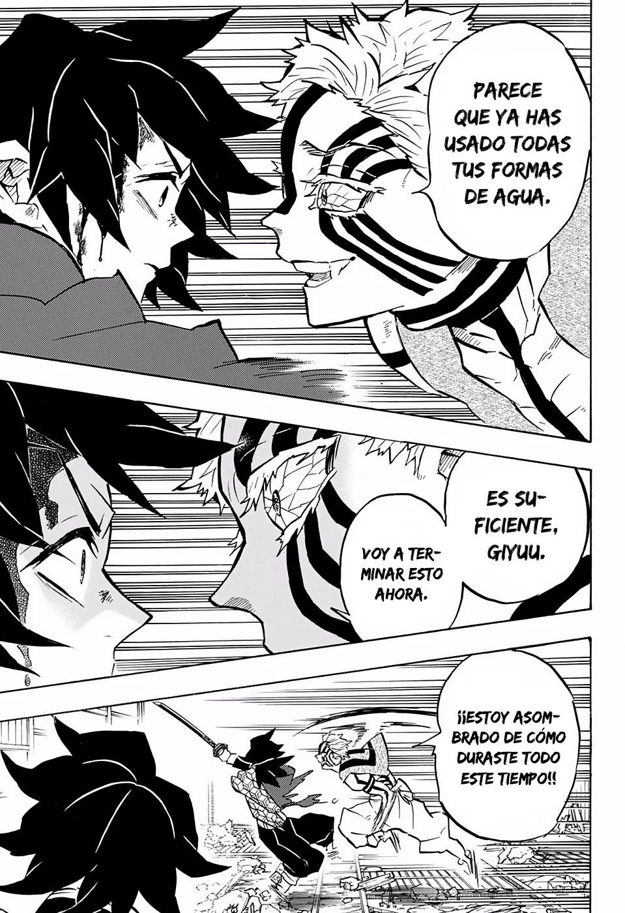
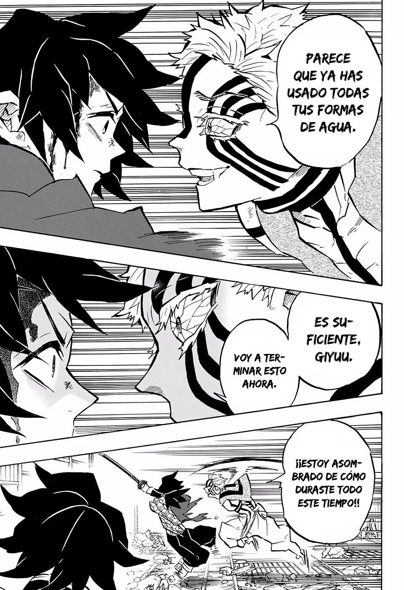
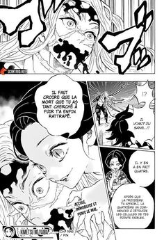
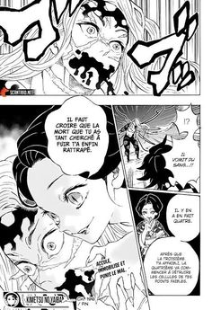
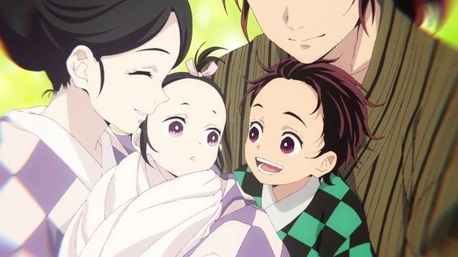
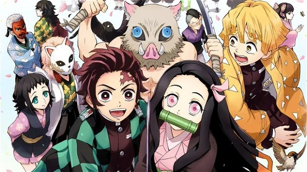
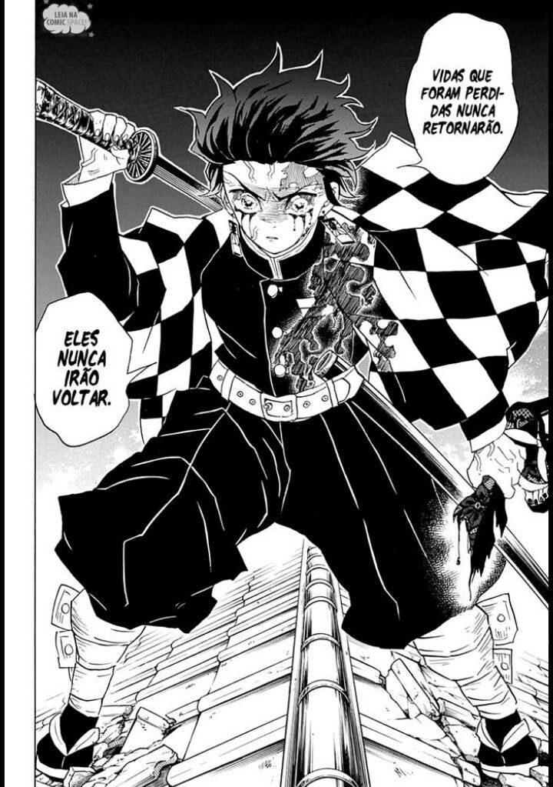
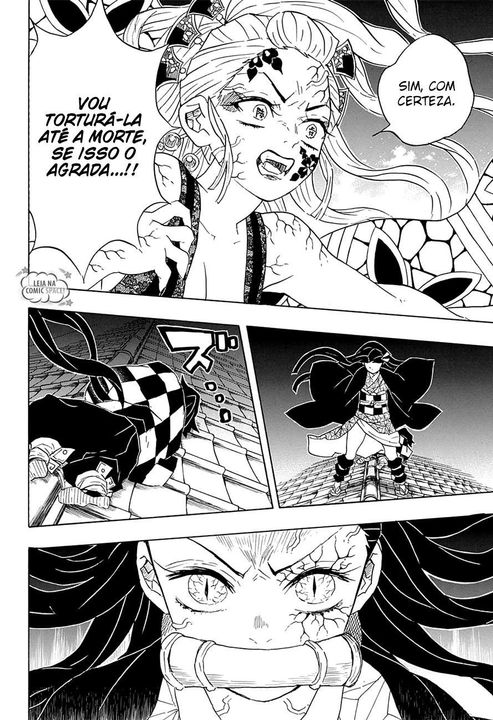
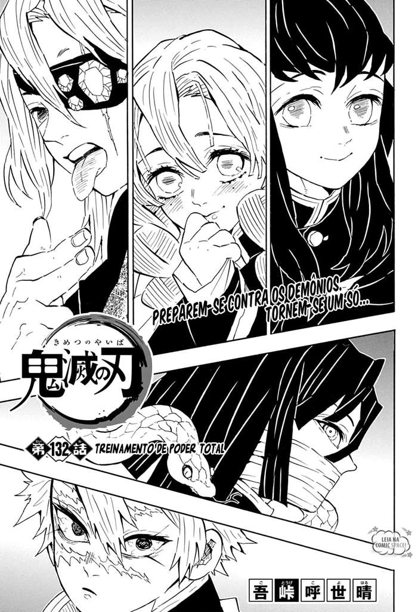
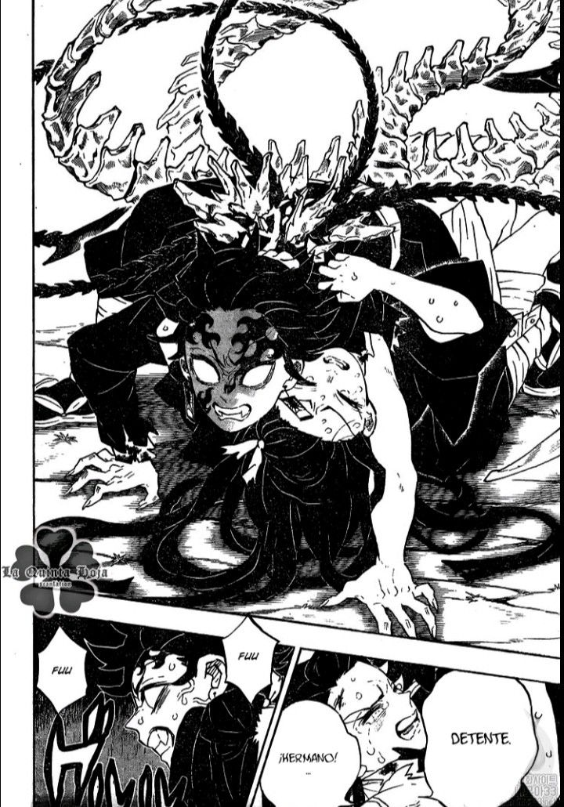

 

Qual é a trama de Kimetsu no Yaiba (Demon Slayer)?

Kimetsu no Yaiba se passa no Japão durante a Era Taishō, período da história do país, entre
1912 e
1926,
caracterizado por grandes problemas políticos e econômicos decorrentes do reinado do
Imperador
Taishō. A
trama nos apresenta a Tanjirō Kamado, um bondoso e inteligente jovem, que vive com sua mãe e
seus
irmãos.
Para ajudar nas despesas da família, Tanjirō vende carvão, trabalho que seu falecido pai também fazia. E é na volta de um de seus dias de trabalho que sua vida toma um rumo inesperado.
Ao chegar em casa, Tanjirō descobre que sua família foi cruelmente massacrada por demônios. Apenas uma de suas irmãs, Nezuko Kamado, sobreviveu ao ataque, mas não sem consequências. A jovem Nezuko foi transformada em um demônio, mas misteriosamente conseguiu manter alguns sinais de emoções e pensamentos humanos.
Para ajudar nas despesas da família, Tanjirō vende carvão, trabalho que seu falecido pai também fazia. E é na volta de um de seus dias de trabalho que sua vida toma um rumo inesperado.
Ao chegar em casa, Tanjirō descobre que sua família foi cruelmente massacrada por demônios. Apenas uma de suas irmãs, Nezuko Kamado, sobreviveu ao ataque, mas não sem consequências. A jovem Nezuko foi transformada em um demônio, mas misteriosamente conseguiu manter alguns sinais de emoções e pensamentos humanos.
Decidido a não só encontrar uma forma de transformar sua irmã novamente em humana, como também a proteger outras famílias e evitar que passem pela tragédia que atingiu a sua, Tanjirō se torna um caçador de demônios e, na companhia de Nezuko, sai em jornada pelo Japão.
Para tanto, o jovem passará por duros treinamentos para se preparar para a Seleção Final da Demon Slayers Corps, uma corporação cuja existência não é conhecida pelo governo do país. Lá, Tanjirō vai descobrir que apenas um demônio é capaz de transformar humanos, Muzan Kibutsuji, o primeiro e mais perigoso demônio a surgir e progenitor de todos os demais.
A série explora as descobertas que eles vão fazendo pelo caminho, mas principalmente a forte ligação entre os dois irmãos e os novos amigos, em meio a todos os desafios que os aguardam.
Com o decorrer da trama Tanjiro e sua irmã Nezuko se juntam aos novos amigos que adiquiriram com
o tempo, Zenitsu e Inosuke entre outros, enquanto enfrentam diversos inimigos que possuem as
mais diversas habilidades, tudo para que ele consiga informações referente ao Oni primordial
Muzan Kibutsuji, para que assim ele consiga fazer com que sua irmã volte ao normal.
Com o tempo, Tanjiro passa a enfrentar Onis cada vez mais poderosos, o que o coloca em situações cada vez mais perigosas, porem ao mesmo tempo, ele começa a obter cda vez mais pistas que o deixa cada vez mais proximo a Muzan Kibutsuji.
Seu encontro com Muzan Kibutsuji se torna cada vez mais real quando tanjiro se une ao Hashira do Som Tengen Uzui, que foi designado para o Distrito do Entretenimento onde foi relatado ações suspeitas na qual possivelmente pode esta relacionado a um Oni.
Com o tempo, Tanjiro passa a enfrentar Onis cada vez mais poderosos, o que o coloca em situações cada vez mais perigosas, porem ao mesmo tempo, ele começa a obter cda vez mais pistas que o deixa cada vez mais proximo a Muzan Kibutsuji.
Seu encontro com Muzan Kibutsuji se torna cada vez mais real quando tanjiro se une ao Hashira do Som Tengen Uzui, que foi designado para o Distrito do Entretenimento onde foi relatado ações suspeitas na qual possivelmente pode esta relacionado a um Oni.




